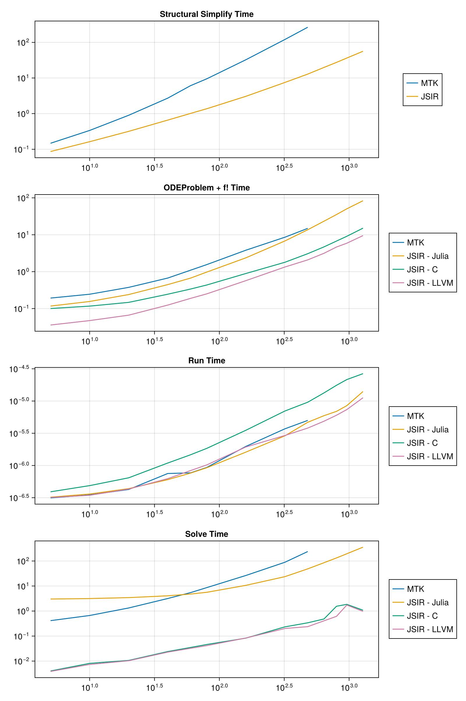

Thermal Fluid ODE Compilation and Perf
This is a 1D advection-diffusion-source PDE that uses a second order upwind scheme.
using Pkg
# Rev fixes precompilation https://github.com/hzgzh/XSteam.jl/pull/2
Pkg.add(Pkg.PackageSpec(;name="XSteam", rev="f2a1c589054cfd6bba307985a3a534b6f5a1863b"))
using ModelingToolkit, JuliaSimCompiler, Symbolics, XSteam, Polynomials, BenchmarkTools, CairoMakie, OrdinaryDiffEq
using OMJuliaSetup Julia Code
# o o o o o o o < heat capacitors
# | | | | | | | < heat conductors
# o o o o o o o
# | | | | | | |
#Source -> o--o--o--o--o--o--o -> Sink
# advection diff source PDE
@variables t
D = Differential(t)
m_flow_source(t) = 2.75
T_source(t) = (t > 12 * 3600) * 56.0 + 12.0
@register_symbolic m_flow_source(t)
@register_symbolic T_source(t)
#build polynomial liquid-water property only dependent on Temperature
p_l = 5 #bar
T_vec = collect(1:1:150);
@generated kin_visc_T(t) = :(Base.evalpoly(t, $(fit(T_vec, my_pT.(p_l, T_vec) ./ rho_pT.(p_l, T_vec), 5).coeffs...,)))
@generated lambda_T(t) = :(Base.evalpoly(t, $(fit(T_vec, tc_pT.(p_l, T_vec), 3).coeffs...,)))
@generated Pr_T(t) = :(Base.evalpoly(t, $(fit(T_vec, 1e3 * Cp_pT.(p_l, T_vec) .* my_pT.(p_l, T_vec) ./ tc_pT.(p_l, T_vec), 5).coeffs...,)))
@generated rho_T(t) = :(Base.evalpoly(t, $(fit(T_vec, rho_pT.(p_l, T_vec), 4).coeffs...,)))
@generated rhocp_T(t) = :(Base.evalpoly(t, $(fit(T_vec, 1000 * rho_pT.(p_l, T_vec) .* Cp_pT.(p_l, T_vec), 5).coeffs...,)))
@register_symbolic kin_visc_T(t)
@register_symbolic lambda_T(t)
@register_symbolic Pr_T(t)
@register_symbolic rho_T(t)
@register_symbolic rhocp_T(t)
@connector function FluidPort(; name, p=101325.0, m=0.0, T=0.0)
sts = @variables p(t) = p m(t) = m [connect = Flow] T(t) = T [connect = Stream]
ODESystem(Equation[], t, sts, []; name=name)
end
@connector function VectorHeatPort(; name, N=100, T0=0.0, Q0=0.0)
sts = @variables (T(t))[1:N] = T0 (Q(t))[1:N] = Q0 [connect = Flow]
ODESystem(Equation[], t, [T; Q], []; name=name)
end
@register_symbolic Dxx_coeff(u, d, T)
#Taylor-aris dispersion model
function Dxx_coeff(u, d, T)
Re = abs(u) * d / kin_visc_T(T) + 0.1
if Re < 1000.0
(d^2 / 4) * u^2 / 48 / 0.14e-6
else
d * u * (1.17e9 * Re^(-2.5) + 0.41)
end
end
@register_symbolic Nusselt(Re, Pr, f)
#Nusselt number model
function Nusselt(Re, Pr, f)
if Re <= 2300.0
3.66
elseif Re <= 3100.0
3.5239 * (Re / 1000)^4 - 45.158 * (Re / 1000)^3 + 212.13 * (Re / 1000)^2 - 427.45 * (Re / 1000) + 316.08
else
f / 8 * ((Re - 1000) * Pr) / (1 + 12.7 * (f / 8)^(1 / 2) * (Pr^(2 / 3) - 1))
end
end
@register_symbolic Churchill_f(Re, epsilon, d)
#Darcy weisbach friction factor
function Churchill_f(Re, epsilon, d)
theta_1 = (-2.457 * log(((7 / Re)^0.9) + (0.27 * (epsilon / d))))^16
theta_2 = (37530 / Re)^16
8 * ((((8 / Re)^12) + (1 / ((theta_1 + theta_2)^1.5)))^(1 / 12))
end
function FluidRegion(; name, L=1.0, dn=0.05, N=100, T0=0.0,
lumped_T=50, diffusion=true, e=1e-4)
@named inlet = FluidPort()
@named outlet = FluidPort()
@named heatport = VectorHeatPort(N=N)
dx = L / N
c = [-1 / 8, -3 / 8, -3 / 8] # advection stencil coefficients
A = pi * dn^2 / 4
p = @parameters C_shift = 0.0 Rw = 0.0 # stuff for latter
@variables begin
(T(t))[1:N] = fill(T0, N)
Twall(t)[1:N] = fill(T0, N)
(S(t))[1:N] = fill(T0, N)
(C(t))[1:N] = fill(1.0, N)
u(t) = 1e-6
Re(t) = 1000.0
Dxx(t) = 0.0
Pr(t) = 1.0
alpha(t) = 1.0
f(t) = 1.0
end
sts = vcat(T, Twall, S, C, Num[u], Num[Re], Num[Dxx], Num[Pr], Num[alpha], Num[f])
eqs = Equation[
Re ~ 0.1 + dn * abs(u) / kin_visc_T(lumped_T)
Pr ~ Pr_T(lumped_T)
f ~ Churchill_f(Re, e, dn) #Darcy-weisbach
alpha ~ Nusselt(Re, Pr, f) * lambda_T(lumped_T) / dn
Dxx ~ diffusion * Dxx_coeff(u, dn, lumped_T)
inlet.m ~ -outlet.m
inlet.p ~ outlet.p
inlet.T ~ instream(inlet.T)
outlet.T ~ T[N]
u ~ inlet.m / rho_T(inlet.T) / A
[C[i] ~ dx * A * rhocp_T(T[i]) for i in 1:N]
[S[i] ~ heatport.Q[i] for i in 1:N]
[Twall[i] ~ heatport.T[i] for i in 1:N]
#source term
[S[i] ~ (1 / (1 / (alpha * dn * pi * dx) + abs(Rw / 1000))) * (Twall[i] - T[i]) for i in 1:N]
#second order upwind + diffusion + source
D(T[1]) ~ u / dx * (inlet.T - T[1]) + Dxx * (T[2] - T[1]) / dx^2 + S[1] / (C[1] - C_shift)
D(T[2]) ~ u / dx * (c[1] * inlet.T - sum(c) * T[1] + c[2] * T[2] + c[3] * T[3]) + Dxx * (T[1] - 2 * T[2] + T[3]) / dx^2 + S[2] / (C[2] - C_shift)
[D(T[i]) ~ u / dx * (c[1] * T[i-2] - sum(c) * T[i-1] + c[2] * T[i] + c[3] * T[i+1]) + Dxx * (T[i-1] - 2 * T[i] + T[i+1]) / dx^2 + S[i] / (C[i] - C_shift) for i in 3:N-1]
D(T[N]) ~ u / dx * (T[N-1] - T[N]) + Dxx * (T[N-1] - T[N]) / dx^2 + S[N] / (C[N] - C_shift)
]
ODESystem(eqs, t, sts, p; systems=[inlet, outlet, heatport], name=name)
end
@register_symbolic Cn_circular_wall_inner(d, D, cp, ρ)
function Cn_circular_wall_inner(d, D, cp, ρ)
C = pi / 4 * (D^2 - d^2) * cp * ρ
return C / 2
end
@register_symbolic Cn_circular_wall_outer(d, D, cp, ρ)
function Cn_circular_wall_outer(d, D, cp, ρ)
C = pi / 4 * (D^2 - d^2) * cp * ρ
return C / 2
end
@register_symbolic Ke_circular_wall(d, D, λ)
function Ke_circular_wall(d, D, λ)
2 * pi * λ / log(D / d)
end
function CircularWallFEM(; name, L=100, N=10, d=0.05, t_layer=[0.002],
λ=[50], cp=[500], ρ=[7850], T0=0.0)
@named inner_heatport = VectorHeatPort(N=N)
@named outer_heatport = VectorHeatPort(N=N)
dx = L / N
Ne = length(t_layer)
Nn = Ne + 1
dn = vcat(d, d .+ 2.0 .* cumsum(t_layer))
Cn = zeros(Nn)
Cn[1:Ne] += Cn_circular_wall_inner.(dn[1:Ne], dn[2:Nn], cp, ρ) .* dx
Cn[2:Nn] += Cn_circular_wall_outer.(dn[1:Ne], dn[2:Nn], cp, ρ) .* dx
p = @parameters C_shift = 0.0
Ke = Ke_circular_wall.(dn[1:Ne], dn[2:Nn], λ) .* dx
@variables begin
(Tn(t))[1:N, 1:Nn] = fill(T0, N, Nn)
(Qe(t))[1:N, 1:Ne] = fill(T0, N, Ne)
end
sts = [vec(Tn); vec(Qe)]
e0 = Equation[inner_heatport.T[i] ~ Tn[i, 1] for i in 1:N]
e1 = Equation[outer_heatport.T[i] ~ Tn[i, Nn] for i in 1:N]
e2 = Equation[Qe[i, j] ~ Ke[j] * (-Tn[i, j+1] + Tn[i, j]) for i in 1:N for j in 1:Ne]
e3 = Equation[D(Tn[i, 1]) * (Cn[1] + C_shift) ~ inner_heatport.Q[i] - Qe[i, 1] for i in 1:N]
e4 = Equation[D(Tn[i, j]) * Cn[j] ~ Qe[i, j-1] - Qe[i, j] for i in 1:N for j in 2:Nn-1]
e5 = Equation[D(Tn[i, Nn]) * Cn[Nn] ~ Qe[i, Ne] + outer_heatport.Q[i] for i in 1:N]
eqs = vcat(e0, e1, e2, e3, e4, e5)
ODESystem(eqs, t, sts, p; systems=[inner_heatport, outer_heatport], name=name)
end
function CylindricalSurfaceConvection(; name, L=100, N=100, d=1.0, α=5.0)
dx = L / N
S = pi * d * dx
@named heatport = VectorHeatPort(N=N)
sts = @variables Tenv(t) = 0.0
eqs = [
Tenv ~ 18.0
[heatport.Q[i] ~ α * S * (heatport.T[i] - Tenv) for i in 1:N]
]
ODESystem(eqs, t, sts, []; systems=[heatport], name=name)
end
function PreinsulatedPipe(; name, L=100.0, N=100.0, dn=0.05, T0=0.0, t_layer=[0.004, 0.013],
λ=[50, 0.04], cp=[500, 1200], ρ=[7800, 40], α=5.0,
e=1e-4, lumped_T=50, diffusion=true)
@named inlet = FluidPort()
@named outlet = FluidPort()
@named fluid_region = FluidRegion(L=L, N=N, dn=dn, e=e, lumped_T=lumped_T, diffusion=diffusion)
@named shell = CircularWallFEM(L=L, N=N, d=dn, t_layer=t_layer, λ=λ, cp=cp, ρ=ρ)
@named surfconv = CylindricalSurfaceConvection(L=L, N=N, d=dn + 2.0 * sum(t_layer), α=α)
systems = [fluid_region, shell, inlet, outlet, surfconv]
eqs = [
connect(fluid_region.inlet, inlet)
connect(fluid_region.outlet, outlet)
connect(fluid_region.heatport, shell.inner_heatport)
connect(shell.outer_heatport, surfconv.heatport)
]
ODESystem(eqs, t, [], []; systems=systems, name=name)
end
function Source(; name, p_feed=100000)
@named outlet = FluidPort()
sts = @variables m_flow(t) = 1e-6
eqs = [
m_flow ~ m_flow_source(t)
outlet.m ~ -m_flow
outlet.p ~ p_feed
outlet.T ~ T_source(t)
]
compose(ODESystem(eqs, t, sts, []; name=name), [outlet])
end
function Sink(; name)
@named inlet = FluidPort()
eqs = [
inlet.T ~ instream(inlet.T)
]
compose(ODESystem(eqs, t, [], []; name=name), [inlet])
end
function TestBenchPreinsulated(; name, L=1.0, dn=0.05, t_layer=[0.0056, 0.013], N=100, diffusion=true, lumped_T=20)
@named pipe = PreinsulatedPipe(L=L, dn=dn, N=N, diffusion=diffusion, t_layer=t_layer, lumped_T=lumped_T)
@named source = Source()
@named sink = Sink()
subs = [source, pipe, sink]
eqs = [
connect(source.outlet, pipe.inlet)
connect(pipe.outlet, sink.inlet)
]
compose(ODESystem(eqs, t, [], []; name=name), subs)
end
function build_system(fsys, N)
N >= 4 || throw("Problem sizes smaller than 4 not supported; received $N.")
@named testbench = TestBenchPreinsulated(; L=470, N, dn=0.3127, t_layer=[0.0056, 0.058])
t0 = time()
sys = structural_simplify(fsys(testbench))
return time() - t0, sys
end
function compile_run_problem(sys; target=JuliaSimCompiler.JuliaTarget(), solver=FBDF(;autodiff = target===JuliaSimCompiler.JuliaTarget()), duref=nothing)
tspan = (0.0, 19 * 3600.0)
t0 = time()
prob = if target === JuliaSimCompiler.JuliaTarget()
ODEProblem(sys, [], tspan; sparse = true)
else
ODEProblem(sys, target, [], tspan; sparse = true)
end
(; f, u0, p) = prob
fill!(u0, 12.0)
ff = f.f
du = similar(u0)
ff(du, u0, p, 0.0)
t_fode = time() - t0
duref === nothing || @assert duref ≈ du
t_run = @belapsed $ff($du, $u0, $p, 0.0)
t_solve = @elapsed sol = solve(prob, solver; reltol=1e-6, abstol=1e-6, saveat=100)
@assert SciMLBase.successful_retcode(sol)
(t_fode, t_run, t_solve), du
end
const C = JuliaSimCompiler.CTarget();
const LLVM = JuliaSimCompiler.llvm.LLVMTarget();
function run_and_time_julia!(ss_times, times, max_sizes, i, N)
@named testbench = TestBenchPreinsulated(L=470, N=N, dn=0.3127, t_layer=[0.0056, 0.058])
if N <= max_sizes[1]
ss_times[i, 1] = @elapsed sys_mtk = structural_simplify(testbench)
times[i, 1], _ = compile_run_problem(sys_mtk)
end
ss_times[i, 2] = @elapsed sys_jsir_scalar = structural_simplify(IRSystem(testbench), loop=false)
oderef = daeref = nothing
N <= max_sizes[2] && ((times[i, 2], oderef) = compile_run_problem(sys_jsir_scalar; duref = oderef))
N <= max_sizes[3] && ((times[i, 3], oderef) = compile_run_problem(sys_jsir_scalar; target=C, duref = oderef))
N <= max_sizes[4] && ((times[i, 4], oderef) = compile_run_problem(sys_jsir_scalar; target=LLVM, duref = oderef))
for j = 1:4
ss_time = ss_times[i, 1 + (j>1)]
t_fode, t_run, t_solve = times[i, j]
total_times[i, j] = ss_time + t_fode + t_solve
end
endrun_and_time_julia! (generic function with 1 method)N = [5, 10, 20, 40, 60, 80, 160, 320, 480, 640, 800, 960, 1280];
N_states = 4 .* N; # x-axis for plots
# max size we run per method, including Julia methods and OpenModelica
# we do not run Dymola in this script, therefore it is excluded
max_sizes = [480, last(N), last(N), last(N), last(N)];
# NaN-initialize so Makie will ignore incomplete
ss_times = fill(NaN, length(N), 2);
# more indepth Julia-times
times = fill((NaN,NaN,NaN), length(N), length(max_sizes) - 1);
# all times, including Dymola
total_times = fill(NaN, length(N), length(max_sizes) + 1); # +1 for DymolaJulia Timings
@time run_and_time_julia!(ss_times, times, max_sizes, 1, 4); # precompile
for (i, n) in enumerate(N)
@time run_and_time_julia!(ss_times, times, max_sizes, i, n)
end83.500698 seconds (74.85 M allocations: 4.968 GiB, 20.46% gc time, 75.67%
compilation time: 19% of which was recompilation)
24.038372 seconds (6.76 M allocations: 447.037 MiB, 66.49% gc time, 16.02%
compilation time)
25.193356 seconds (9.01 M allocations: 604.112 MiB, 63.73% gc time, 17.05%
compilation time)
27.957358 seconds (14.35 M allocations: 902.653 MiB, 58.05% gc time, 19.35
% compilation time)
33.646682 seconds (28.41 M allocations: 1.875 GiB, 49.11% gc time, 24.00%
compilation time)
41.195256 seconds (46.79 M allocations: 3.012 GiB, 42.88% gc time, 27.22%
compilation time)
48.940123 seconds (69.59 M allocations: 4.746 GiB, 36.76% gc time, 30.50%
compilation time)
104.091226 seconds (203.68 M allocations: 14.273 GiB, 20.41% gc time, 33.07
% compilation time)
289.333248 seconds (681.37 M allocations: 50.277 GiB, 9.24% gc time, 32.18%
compilation time)
635.242415 seconds (1.44 G allocations: 91.434 GiB, 5.46% gc time, 41.31% c
ompilation time)
166.045139 seconds (103.28 M allocations: 6.902 GiB, 12.53% gc time, 64.15%
compilation time)
240.588666 seconds (131.80 M allocations: 9.205 GiB, 9.61% gc time, 68.82%
compilation time)
334.979162 seconds (160.91 M allocations: 11.522 GiB, 8.14% gc time, 72.54%
compilation time)
563.106128 seconds (223.77 M allocations: 15.222 GiB, 5.17% gc time, 77.64%
compilation time)Time OpenModelica
using OMJulia, CSV, DataFrames
mod = OMJulia.OMCSession();
OMJulia.sendExpression(mod, "getVersion()")
OMJulia.sendExpression(mod, "installPackage(Modelica)")
modelicafile = "../../benchmarks/ModelingToolkit/DhnControl.mo"
resultfile = "modelica_res.csv"
@show "Start OpenModelica Timings"
for i in eachindex(N)
n = N[i]
n > max_sizes[end] && break
@show n
totaltime = @elapsed res = begin
@sync ModelicaSystem(mod, modelicafile, "DhnControl.Test.test_preinsulated_470_$n")
sendExpression(mod, "simulate(DhnControl.Test.test_preinsulated_470_$n)")
end
#runtime = res["timeTotal"]
@assert res["messages"][1:11] == "LOG_SUCCESS"
total_times[i, 5] = totaltime
end
OMJulia.quit(mod)
total_times[:, 5]"Start OpenModelica Timings" = "Start OpenModelica Timings"
n = 5
n = 10
n = 20
n = 40
n = 60
n = 80
n = 160
n = 320
n = 480
n = 640
n = 800
n = 960
n = 1280
13-element Vector{Float64}:
3.990612911
3.306806648
4.71369827
7.433061017
10.788756278
15.208245017
30.080728696
63.360019663
96.888330013
135.022630001
174.659401005
213.665111326
329.91745815Time Dymola
Dymola requires a license server and thus cannot be hosted. This was run locally for the following times:
translation_and_total_times = [1.802 1.921
1.78 1.846
1.84 1.877
2.028 2.075
2.221 2.283
2.409 2.496
3.189 3.427
4.758 5.577
6.39 8.128
8.052 11.026
9.707 14.393
11.411 17.752
15.094 27.268]
total_times[:, 6] = translation_and_total_times[1:length(N),2]13-element Vector{Float64}:
1.921
1.846
1.877
2.075
2.283
2.496
3.427
5.577
8.128
11.026
14.393
17.752
27.268Generate Final Plots
f = Figure(size=(800,1200));
ss_names = ["MTK", "JSIR"];
let ax = Axis(f[1, 1]; yscale = log10, xscale = log10, title="Structural Simplify Time")
_lines = map(eachcol(ss_times)) do ts
lines!(N, ts)
end
Legend(f[1,2], _lines, ss_names)
end
method_names = ["MTK", "JSIR - Julia", "JSIR - C", "JSIR - LLVM"];
for (i, timecat) in enumerate(("ODEProblem + f!", "Run", "Solve"))
title = timecat * " Time"
ax = Axis(f[i+1, 1]; yscale = log10, xscale = log10, title)
_lines = map(eachcol(times)) do ts
lines!(N, getindex.(ts, i))
end
Legend(f[i+1, 2], _lines, method_names)
end
f
f2 = Figure(size = (800, 400));
title = "Total Time: Thermal Fluid Benchmark"
ax = Axis(f2[1, 1]; yscale = log10, xscale = log10, title)
names = ["MTK", "JSIR - Julia", "JSIR - C", "JSIR - LLVM", "OpenModelica", "Dymola"]
_lines = map(enumerate(names)) do (j, label)
ts = @view(total_times[:, j])
lines!(N_states, ts)
end
Legend(f2[1,2], _lines, names)
f2
Appendix
Appendix
These benchmarks are a part of the SciMLBenchmarks.jl repository, found at: https://github.com/SciML/SciMLBenchmarks.jl. For more information on high-performance scientific machine learning, check out the SciML Open Source Software Organization https://sciml.ai.
To locally run this benchmark, do the following commands:
using SciMLBenchmarks
SciMLBenchmarks.weave_file("benchmarks/ModelingToolkit","ThermalFluid.jmd")Computer Information:
Julia Version 1.10.4
Commit 48d4fd48430 (2024-06-04 10:41 UTC)
Build Info:
Official https://julialang.org/ release
Platform Info:
OS: Linux (x86_64-linux-gnu)
CPU: 128 × AMD EPYC 7502 32-Core Processor
WORD_SIZE: 64
LIBM: libopenlibm
LLVM: libLLVM-15.0.7 (ORCJIT, znver2)
Threads: 1 default, 0 interactive, 1 GC (on 128 virtual cores)
Environment:
JULIA_CPU_THREADS = 128
JULIA_DEPOT_PATH = /cache/julia-buildkite-plugin/depots/5b300254-1738-4989-ae0a-f4d2d937f953
JULIA_PKG_SERVER = juliahub.com
Package Information:
Status `/cache/build/exclusive-amdci3-0/julialang/scimlbenchmarks-dot-jl/benchmarks/ModelingToolkit/Project.toml`
[6e4b80f9] BenchmarkTools v1.5.0
[336ed68f] CSV v0.10.14
⌅ [13f3f980] CairoMakie v0.11.11
[a93c6f00] DataFrames v1.6.1
[8391cb6b] JuliaSimCompiler v0.1.17
[9cbdfd5a] JuliaSimCompilerRuntime v1.0.2
[7ed4a6bd] LinearSolve v2.32.0
[961ee093] ModelingToolkit v9.32.0
[16a59e39] ModelingToolkitStandardLibrary v2.11.0
[e1cad5d1] Multibody v0.1.0
[0f4fe800] OMJulia v0.3.2
[1dea7af3] OrdinaryDiffEq v6.87.0
[f27b6e38] Polynomials v4.0.11
[ba661fbb] PreferenceTools v0.1.2
[31c91b34] SciMLBenchmarks v0.1.3
⌅ [0c5d862f] Symbolics v5.36.0
[95ff35a0] XSteam v0.3.0 `https://github.com/hzgzh/XSteam.jl.git#f2a1c58`
[de0858da] Printf
Info Packages marked with ⌅ have new versions available but compatibility constraints restrict them from upgrading. To see why use `status --outdated`And the full manifest:
Status `/cache/build/exclusive-amdci3-0/julialang/scimlbenchmarks-dot-jl/benchmarks/ModelingToolkit/Manifest.toml`
[47edcb42] ADTypes v1.7.1
[621f4979] AbstractFFTs v1.5.0
[1520ce14] AbstractTrees v0.4.5
[7d9f7c33] Accessors v0.1.37
[79e6a3ab] Adapt v4.0.4
[35492f91] AdaptivePredicates v1.1.1
[66dad0bd] AliasTables v1.1.3
[27a7e980] Animations v0.4.1
[ec485272] ArnoldiMethod v0.4.0
[4fba245c] ArrayInterface v7.15.0
[4c555306] ArrayLayouts v1.10.2
[67c07d97] Automa v1.0.4
[13072b0f] AxisAlgorithms v1.1.0
[39de3d68] AxisArrays v0.4.7
[6e4b80f9] BenchmarkTools v1.5.0
[e2ed5e7c] Bijections v0.1.7
[62783981] BitTwiddlingConvenienceFunctions v0.1.6
[fa961155] CEnum v0.5.0
[2a0fbf3d] CPUSummary v0.2.6
[00ebfdb7] CSTParser v3.4.3
[336ed68f] CSV v0.10.14
[159f3aea] Cairo v1.0.5
⌅ [13f3f980] CairoMakie v0.11.11
[49dc2e85] Calculus v0.5.1
[082447d4] ChainRules v1.69.0
[d360d2e6] ChainRulesCore v1.24.0
[fb6a15b2] CloseOpenIntervals v0.1.13
[944b1d66] CodecZlib v0.7.6
[a2cac450] ColorBrewer v0.4.0
[35d6a980] ColorSchemes v3.26.0
[3da002f7] ColorTypes v0.11.5
[c3611d14] ColorVectorSpace v0.10.0
[5ae59095] Colors v0.12.11
[861a8166] Combinatorics v1.0.2
[a80b9123] CommonMark v0.8.12
[38540f10] CommonSolve v0.2.4
[bbf7d656] CommonSubexpressions v0.3.0
[f70d9fcc] CommonWorldInvalidations v1.0.0
[34da2185] Compat v4.16.0
[b152e2b5] CompositeTypes v0.1.4
[a33af91c] CompositionsBase v0.1.2
[2569d6c7] ConcreteStructs v0.2.3
[8f4d0f93] Conda v1.10.2
[187b0558] ConstructionBase v1.5.6
[d38c429a] Contour v0.6.3
[150eb455] CoordinateTransformations v0.6.3
[adafc99b] CpuId v0.3.1
[a8cc5b0e] Crayons v4.1.1
[9a962f9c] DataAPI v1.16.0
[a93c6f00] DataFrames v1.6.1
⌅ [82cc6244] DataInterpolations v5.3.1
[864edb3b] DataStructures v0.18.20
[e2d170a0] DataValueInterfaces v1.0.0
[927a84f5] DelaunayTriangulation v1.1.3
[2b5f629d] DiffEqBase v6.152.2
[459566f4] DiffEqCallbacks v3.7.0
[77a26b50] DiffEqNoiseProcess v5.23.0
[163ba53b] DiffResults v1.1.0
[b552c78f] DiffRules v1.15.1
[a0c0ee7d] DifferentiationInterface v0.5.12
[31c24e10] Distributions v0.25.110
[ffbed154] DocStringExtensions v0.9.3
[5b8099bc] DomainSets v0.7.14
[fa6b7ba4] DualNumbers v0.6.8
⌅ [7c1d4256] DynamicPolynomials v0.5.7
⌅ [06fc5a27] DynamicQuantities v0.13.2
[4e289a0a] EnumX v1.0.4
[f151be2c] EnzymeCore v0.7.8
[429591f6] ExactPredicates v2.2.8
[d4d017d3] ExponentialUtilities v1.26.1
[e2ba6199] ExprTools v0.1.10
⌅ [6b7a57c9] Expronicon v0.8.5
[411431e0] Extents v0.1.3
[7a1cc6ca] FFTW v1.8.0
[7034ab61] FastBroadcast v0.3.5
[9aa1b823] FastClosures v0.3.2
[29a986be] FastLapackInterface v2.0.4
[5789e2e9] FileIO v1.16.3
[8fc22ac5] FilePaths v0.8.3
[48062228] FilePathsBase v0.9.21
[1a297f60] FillArrays v1.11.0
[64ca27bc] FindFirstFunctions v1.3.0
[6a86dc24] FiniteDiff v2.24.0
[53c48c17] FixedPointNumbers v0.8.5
[1fa38f19] Format v1.3.7
[f6369f11] ForwardDiff v0.10.36
[b38be410] FreeType v4.1.1
[663a7486] FreeTypeAbstraction v0.10.3
[069b7b12] FunctionWrappers v1.1.3
[77dc65aa] FunctionWrappersWrappers v0.1.3
[d9f16b24] Functors v0.4.12
[46192b85] GPUArraysCore v0.1.6
⌅ [61eb1bfa] GPUCompiler v0.26.5
[c145ed77] GenericSchur v0.5.4
[cf35fbd7] GeoInterface v1.3.5
[5c1252a2] GeometryBasics v0.4.11
[d7ba0133] Git v1.3.1
[c27321d9] Glob v1.3.1
[a2bd30eb] Graphics v1.1.2
[86223c79] Graphs v1.11.2
⌅ [3955a311] GridLayoutBase v0.10.2
[42e2da0e] Grisu v1.0.2
[eafb193a] Highlights v0.5.3
[3e5b6fbb] HostCPUFeatures v0.1.17
[34004b35] HypergeometricFunctions v0.3.23
[7073ff75] IJulia v1.25.0
[615f187c] IfElse v0.1.1
[2803e5a7] ImageAxes v0.6.11
[c817782e] ImageBase v0.1.7
[a09fc81d] ImageCore v0.10.2
[82e4d734] ImageIO v0.6.8
[bc367c6b] ImageMetadata v0.9.9
[9b13fd28] IndirectArrays v1.0.0
[d25df0c9] Inflate v0.1.5
[842dd82b] InlineStrings v1.4.2
[a98d9a8b] Interpolations v0.15.1
[d1acc4aa] IntervalArithmetic v0.22.14
[8197267c] IntervalSets v0.7.10
[3587e190] InverseFunctions v0.1.16
[41ab1584] InvertedIndices v1.3.0
[92d709cd] IrrationalConstants v0.2.2
[f1662d9f] Isoband v0.1.1
[c8e1da08] IterTools v1.10.0
[82899510] IteratorInterfaceExtensions v1.0.0
[692b3bcd] JLLWrappers v1.5.0
[682c06a0] JSON v0.21.4
[b835a17e] JpegTurbo v0.1.5
[98e50ef6] JuliaFormatter v1.0.59
[9c9cc66b] JuliaSimBase v0.1.0
[8391cb6b] JuliaSimCompiler v0.1.17
[9cbdfd5a] JuliaSimCompilerRuntime v1.0.2
[ccbc3e58] JumpProcesses v9.13.2
[ef3ab10e] KLU v0.6.0
[5ab0869b] KernelDensity v0.6.9
[ba0b0d4f] Krylov v0.9.6
⌅ [929cbde3] LLVM v7.2.1
[b964fa9f] LaTeXStrings v1.3.1
[2ee39098] LabelledArrays v1.16.0
[984bce1d] LambertW v0.4.6
[23fbe1c1] Latexify v0.16.5
[10f19ff3] LayoutPointers v0.1.17
[5078a376] LazyArrays v2.2.0
[8cdb02fc] LazyModules v0.3.1
[9c8b4983] LightXML v0.9.1
[d3d80556] LineSearches v7.3.0
[7ed4a6bd] LinearSolve v2.32.0
[2ab3a3ac] LogExpFunctions v0.3.28
[bdcacae8] LoopVectorization v0.12.171
[d8e11817] MLStyle v0.4.17
[1914dd2f] MacroTools v0.5.13
⌅ [ee78f7c6] Makie v0.20.10
⌅ [20f20a25] MakieCore v0.7.3
[d125e4d3] ManualMemory v0.1.8
[dbb5928d] MappedArrays v0.4.2
⌅ [0a4f8689] MathTeXEngine v0.5.7
[bb5d69b7] MaybeInplace v0.1.3
[739be429] MbedTLS v1.1.9
[7269a6da] MeshIO v0.4.12
[e1d29d7a] Missings v1.2.0
[961ee093] ModelingToolkit v9.32.0
[16a59e39] ModelingToolkitStandardLibrary v2.11.0
[e94cdb99] MosaicViews v0.3.4
[46d2c3a1] MuladdMacro v0.2.4
[e1cad5d1] Multibody v0.1.0
[102ac46a] MultivariatePolynomials v0.5.6
[ffc61752] Mustache v1.0.20
[d8a4904e] MutableArithmetics v1.4.6
[d41bc354] NLSolversBase v7.8.3
[77ba4419] NaNMath v1.0.2
[f09324ee] Netpbm v1.1.1
[8913a72c] NonlinearSolve v3.14.0
[0f4fe800] OMJulia v0.3.2
[510215fc] Observables v0.5.5
[6fe1bfb0] OffsetArrays v1.14.1
[52e1d378] OpenEXR v0.3.2
[429524aa] Optim v1.9.4
[bac558e1] OrderedCollections v1.6.3
[1dea7af3] OrdinaryDiffEq v6.87.0
[90014a1f] PDMats v0.11.31
[f57f5aa1] PNGFiles v0.4.3
[65ce6f38] PackageExtensionCompat v1.0.2
[19eb6ba3] Packing v0.5.0
[5432bcbf] PaddedViews v0.5.12
[d96e819e] Parameters v0.12.3
[69de0a69] Parsers v2.8.1
[eebad327] PkgVersion v0.3.3
[995b91a9] PlotUtils v1.4.1
[e409e4f3] PoissonRandom v0.4.4
[f517fe37] Polyester v0.7.16
[1d0040c9] PolyesterWeave v0.2.2
[647866c9] PolygonOps v0.1.2
[f27b6e38] Polynomials v4.0.11
[2dfb63ee] PooledArrays v1.4.3
[85a6dd25] PositiveFactorizations v0.2.4
[d236fae5] PreallocationTools v0.4.23
[aea7be01] PrecompileTools v1.2.1
[ba661fbb] PreferenceTools v0.1.2
[21216c6a] Preferences v1.4.3
[08abe8d2] PrettyTables v2.3.2
[92933f4c] ProgressMeter v1.10.2
[43287f4e] PtrArrays v1.2.0
[4b34888f] QOI v1.0.0
[1fd47b50] QuadGK v2.10.1
[94ee1d12] Quaternions v0.7.6
[74087812] Random123 v1.7.0
[e6cf234a] RandomNumbers v1.5.3
[b3c3ace0] RangeArrays v0.3.2
[c84ed2f1] Ratios v0.4.5
[988b38a3] ReadOnlyArrays v0.2.0
[c1ae055f] RealDot v0.1.0
[3cdcf5f2] RecipesBase v1.3.4
[731186ca] RecursiveArrayTools v3.27.0
[f2c3362d] RecursiveFactorization v0.2.23
[189a3867] Reexport v1.2.2
[05181044] RelocatableFolders v1.0.1
[ae029012] Requires v1.3.0
[ae5879a3] ResettableStacks v1.1.1
[79098fc4] Rmath v0.7.1
[6038ab10] Rotations v1.7.1
[5eaf0fd0] RoundingEmulator v0.2.1
[7e49a35a] RuntimeGeneratedFunctions v0.5.13
[fdea26ae] SIMD v3.5.0
[94e857df] SIMDTypes v0.1.0
[476501e8] SLEEFPirates v0.6.43
[0bca4576] SciMLBase v2.48.1
[31c91b34] SciMLBenchmarks v0.1.3
[c0aeaf25] SciMLOperators v0.3.9
[53ae85a6] SciMLStructures v1.4.2
[6c6a2e73] Scratch v1.2.1
[91c51154] SentinelArrays v1.4.5
[efcf1570] Setfield v1.1.1
[65257c39] ShaderAbstractions v0.4.1
[992d4aef] Showoff v1.0.3
[73760f76] SignedDistanceFields v0.4.0
[727e6d20] SimpleNonlinearSolve v1.12.0
[699a6c99] SimpleTraits v0.9.4
[ce78b400] SimpleUnPack v1.1.0
[45858cf5] Sixel v0.1.3
[66db9d55] SnoopPrecompile v1.0.3
[b85f4697] SoftGlobalScope v1.1.0
[a2af1166] SortingAlgorithms v1.2.1
[47a9eef4] SparseDiffTools v2.20.0
[dc90abb0] SparseInverseSubset v0.1.2
[0a514795] SparseMatrixColorings v0.3.6
[e56a9233] Sparspak v0.3.9
[276daf66] SpecialFunctions v2.4.0
[cae243ae] StackViews v0.1.1
[aedffcd0] Static v1.1.1
[0d7ed370] StaticArrayInterface v1.8.0
[90137ffa] StaticArrays v1.9.7
[1e83bf80] StaticArraysCore v1.4.3
[82ae8749] StatsAPI v1.7.0
[2913bbd2] StatsBase v0.34.3
[4c63d2b9] StatsFuns v1.3.1
[7792a7ef] StrideArraysCore v0.5.7
[69024149] StringEncodings v0.3.7
[892a3eda] StringManipulation v0.3.4
[09ab397b] StructArrays v0.6.18
[2efcf032] SymbolicIndexingInterface v0.3.28
⌃ [19f23fe9] SymbolicLimits v0.2.1
⌅ [d1185830] SymbolicUtils v2.1.2
⌅ [0c5d862f] Symbolics v5.36.0
[3783bdb8] TableTraits v1.0.1
[bd369af6] Tables v1.12.0
[62fd8b95] TensorCore v0.1.1
⌅ [8ea1fca8] TermInterface v0.4.1
[8290d209] ThreadingUtilities v0.5.2
[731e570b] TiffImages v0.10.0
[a759f4b9] TimerOutputs v0.5.24
[0796e94c] Tokenize v0.5.29
[3bb67fe8] TranscodingStreams v0.11.2
[d5829a12] TriangularSolve v0.2.1
[410a4b4d] Tricks v0.1.9
[981d1d27] TriplotBase v0.1.0
[781d530d] TruncatedStacktraces v1.4.0
[5c2747f8] URIs v1.5.1
[3a884ed6] UnPack v1.0.2
[1cfade01] UnicodeFun v0.4.1
[1986cc42] Unitful v1.21.0
[a7c27f48] Unityper v0.1.6
[3d5dd08c] VectorizationBase v0.21.70
[81def892] VersionParsing v1.3.0
[19fa3120] VertexSafeGraphs v0.2.0
[ea10d353] WeakRefStrings v1.4.2
[44d3d7a6] Weave v0.10.12
[efce3f68] WoodburyMatrices v1.0.0
[76eceee3] WorkerUtilities v1.6.1
[95ff35a0] XSteam v0.3.0 `https://github.com/hzgzh/XSteam.jl.git#f2a1c58`
[ddb6d928] YAML v0.4.12
[c2297ded] ZMQ v1.3.0
[6e34b625] Bzip2_jll v1.0.8+1
[4e9b3aee] CRlibm_jll v1.0.1+0
[83423d85] Cairo_jll v1.18.0+2
[5ae413db] EarCut_jll v2.2.4+0
[2e619515] Expat_jll v2.6.2+0
[b22a6f82] FFMPEG_jll v6.1.1+0
[f5851436] FFTW_jll v3.3.10+0
[a3f928ae] Fontconfig_jll v2.13.96+0
[d7e528f0] FreeType2_jll v2.13.2+0
[559328eb] FriBidi_jll v1.0.14+0
[78b55507] Gettext_jll v0.21.0+0
[f8c6e375] Git_jll v2.44.0+2
[7746bdde] Glib_jll v2.80.2+0
[3b182d85] Graphite2_jll v1.3.14+0
[2e76f6c2] HarfBuzz_jll v2.8.1+1
[905a6f67] Imath_jll v3.1.11+0
[1d5cc7b8] IntelOpenMP_jll v2024.2.0+0
[aacddb02] JpegTurbo_jll v3.0.3+0
[c1c5ebd0] LAME_jll v3.100.2+0
⌅ [dad2f222] LLVMExtra_jll v0.0.29+0
[1d63c593] LLVMOpenMP_jll v15.0.7+0
[dd4b983a] LZO_jll v2.10.2+0
⌅ [e9f186c6] Libffi_jll v3.2.2+1
[d4300ac3] Libgcrypt_jll v1.8.11+0
[7add5ba3] Libgpg_error_jll v1.49.0+0
[94ce4f54] Libiconv_jll v1.17.0+0
[4b2f31a3] Libmount_jll v2.40.1+0
[38a345b3] Libuuid_jll v2.40.1+0
[856f044c] MKL_jll v2024.2.0+0
[e7412a2a] Ogg_jll v1.3.5+1
[18a262bb] OpenEXR_jll v3.2.4+0
[458c3c95] OpenSSL_jll v3.0.14+0
[efe28fd5] OpenSpecFun_jll v0.5.5+0
[91d4177d] Opus_jll v1.3.2+0
[36c8627f] Pango_jll v1.52.2+0
[30392449] Pixman_jll v0.43.4+0
[f50d1b31] Rmath_jll v0.4.3+0
[02c8fc9c] XML2_jll v2.13.1+0
[aed1982a] XSLT_jll v1.1.41+0
[4f6342f7] Xorg_libX11_jll v1.8.6+0
[0c0b7dd1] Xorg_libXau_jll v1.0.11+0
[a3789734] Xorg_libXdmcp_jll v1.1.4+0
[1082639a] Xorg_libXext_jll v1.3.6+0
[ea2f1a96] Xorg_libXrender_jll v0.9.11+0
[14d82f49] Xorg_libpthread_stubs_jll v0.1.1+0
[c7cfdc94] Xorg_libxcb_jll v1.17.0+0
[c5fb5394] Xorg_xtrans_jll v1.5.0+0
[8f1865be] ZeroMQ_jll v4.3.5+0
[9a68df92] isoband_jll v0.2.3+0
[a4ae2306] libaom_jll v3.9.0+0
[0ac62f75] libass_jll v0.15.1+0
[f638f0a6] libfdk_aac_jll v2.0.2+0
[b53b4c65] libpng_jll v1.6.43+1
[075b6546] libsixel_jll v1.10.3+0
[a9144af2] libsodium_jll v1.0.20+0
[f27f6e37] libvorbis_jll v1.3.7+2
[1317d2d5] oneTBB_jll v2021.12.0+0
[1270edf5] x264_jll v2021.5.5+0
[dfaa095f] x265_jll v3.5.0+0
[0dad84c5] ArgTools v1.1.1
[56f22d72] Artifacts
[2a0f44e3] Base64
[8bf52ea8] CRC32c
[ade2ca70] Dates
[8ba89e20] Distributed
[f43a241f] Downloads v1.6.0
[7b1f6079] FileWatching
[9fa8497b] Future
[b77e0a4c] InteractiveUtils
[4af54fe1] LazyArtifacts
[b27032c2] LibCURL v0.6.4
[76f85450] LibGit2
[8f399da3] Libdl
[37e2e46d] LinearAlgebra
[56ddb016] Logging
[d6f4376e] Markdown
[a63ad114] Mmap
[ca575930] NetworkOptions v1.2.0
[44cfe95a] Pkg v1.10.0
[de0858da] Printf
[9abbd945] Profile
[3fa0cd96] REPL
[9a3f8284] Random
[ea8e919c] SHA v0.7.0
[9e88b42a] Serialization
[1a1011a3] SharedArrays
[6462fe0b] Sockets
[2f01184e] SparseArrays v1.10.0
[10745b16] Statistics v1.10.0
[4607b0f0] SuiteSparse
[fa267f1f] TOML v1.0.3
[a4e569a6] Tar v1.10.0
[8dfed614] Test
[cf7118a7] UUIDs
[4ec0a83e] Unicode
[e66e0078] CompilerSupportLibraries_jll v1.1.1+0
[deac9b47] LibCURL_jll v8.4.0+0
[e37daf67] LibGit2_jll v1.6.4+0
[29816b5a] LibSSH2_jll v1.11.0+1
[c8ffd9c3] MbedTLS_jll v2.28.2+1
[14a3606d] MozillaCACerts_jll v2023.1.10
[4536629a] OpenBLAS_jll v0.3.23+4
[05823500] OpenLibm_jll v0.8.1+2
[efcefdf7] PCRE2_jll v10.42.0+1
[bea87d4a] SuiteSparse_jll v7.2.1+1
[83775a58] Zlib_jll v1.2.13+1
[8e850b90] libblastrampoline_jll v5.8.0+1
[8e850ede] nghttp2_jll v1.52.0+1
[3f19e933] p7zip_jll v17.4.0+2
Info Packages marked with ⌃ and ⌅ have new versions available. Those with ⌃ may be upgradable, but those with ⌅ are restricted by compatibility constraints from upgrading. To see why use `status --outdated -m`